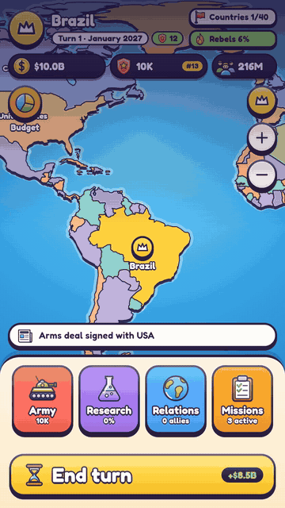
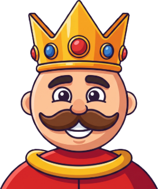

About
Imperiali is a turn-based strategy game on the real world map. Pick one of 173 countries and run it month by month: taxes and budget, research, factories, generals, spies and diplomacy. Then try to conquer the world.
It turns the usual conquest game around. Every country you take makes the rest of the world hate you more. Neighbours arm themselves, relations sour, and countries declare war on you. A great power that starts expanding soon faces an international coalition led by its political rival. There are no hidden combat bonuses: the difficulty comes from how the world reacts to your success.
The game is completely free, in a genre known for pay-to-win: no ads, no in-app purchases, no account, and it runs fully offline.
Features
- The whole world map with 173 countries, opening region by region as you level up
- Battles in phases (missiles, air, artillery, sea and ground) with a detailed loss report
- 15 scenarios with stars, five difficulty levels from easy to impossible
- Kings and treasures to collect, missions and achievements
- An illustrated emperor who guides new players with voice, motion and icons
- 31 languages
Videos and GIFs


Trailers (MP4, 1920×1080) and short videos (MP4, 1080×1920):Trailer (EN) Trailer (Hebrew)Timelapse The world hates you Total war
Screenshots


Logo and art
Icon 1024×1024 Icon 512×512 Banner 1024×500 The emperor (transparent PNG)


All images and videos on this page may be used in coverage of the game.